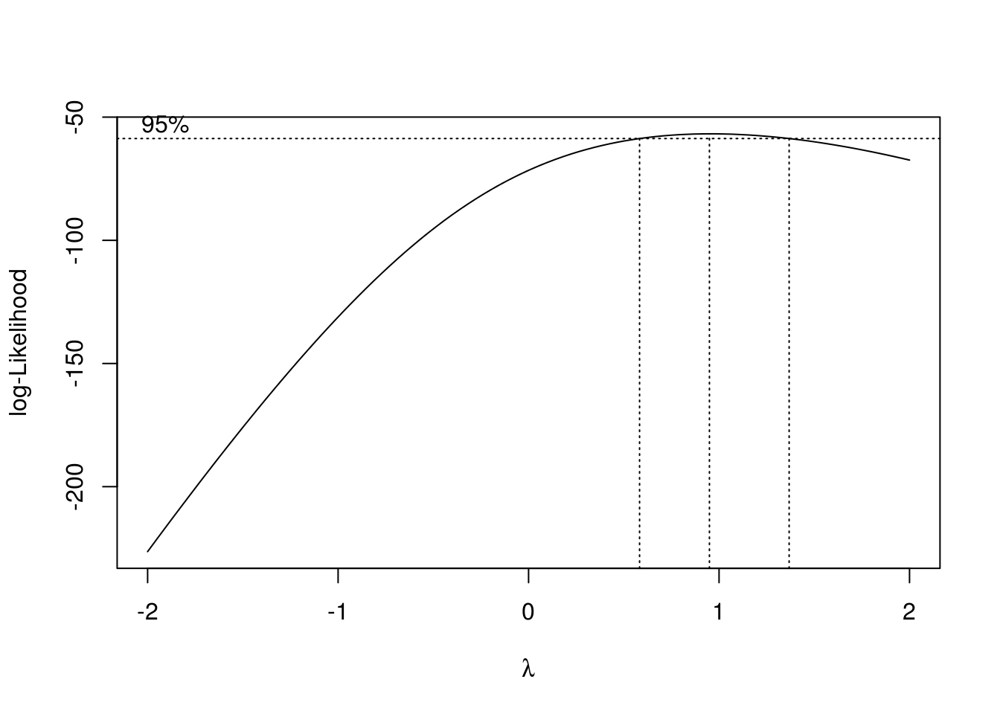

11 Anova
# install.packages("multcompView") # solo una vez y no hace falta cargarlo
pacman::p_load(
tidyverse,
skimr, # exploracion numerica de los datos
performance, # evaluar performance de los modelos
emmeans, # medias estimadas por el modelo
multcomp # comparar las medias entre si - tukey
)11.1 Un solo factor
Experimento DCA: dataset PlantGrowth
pg <- PlantGrowth # simplificamos el nombre del dataset
pgPlantGrowth {datasets}
Results from an experiment to compare yields (as measured by dried weight of plants) obtained under a control and two different treatment conditions.
1- Exploración numérica
str(pg) # tipo de variablespg %>%
group_by(group) %>%
skimr::skim() # exploración numéricapg %>%
group_by(group) %>%
summarise(
n = sum(!is.na(weight)),
mean = mean(weight),
sd = sd(weight))2- Exploración visual
pg %>%
ggplot()+
aes(x=group, y=weight) +
geom_boxplot(width=0.2)+
geom_jitter(alpha=0.2, width=0.2)3- Ajuste del modelo lineal
mod1 <- lm(weight ~ group, data = pg) \[y_{ij} = \mu + \alpha_i + e_{ij}; \:\:i = 1,..., k; \:j = 1,..., n\] \[N \sim (\sigma^2, 0)\]
5- Diagnósticos
¿Las varianzas (entre niveles del factor) son homogéneas?
check_heteroscedasticity(mod1) %>% plot
# plot(mod1, which = 1)
# car::leveneTest(mod1)¿Los residuos se distribuyen normales?
check_normality(mod1) %>% plot
# plot(mod1, which = 2)
# shapiro.test(rstandard(mod1))6- Estadisticas
anova(mod1)# caso balanceado
summary(mod1)
# car::Anova(mod1)# caso desbalanceado7- Comparaciones múltiples {-}
Paquete emmeans
Medias e intervalos de confianza estimadas por el modelo
em <- emmeans(mod1, ~ group, type="response")
em # %>% knitr::kable()
class(em)Test de Tukey
res <- cld(em,
Letters = letters,
reverse = TRUE,
alpha = .05)
res?pwpm
pwpm(em, adjust = "none")res <- res %>%
mutate(letras = str_squish(.group),
weight = emmean)8- Grafico final
res %>%
ggplot() +
aes(x=group, y=weight)+
geom_pointrange(aes(ymin = lower.CL, ymax = upper.CL))+
labs(x = "Tratamiento", y = "Peso (g)")+
geom_text(aes(label = letras), angle=90, vjust=-1)+
geom_jitter(data = pg, width = .1, alpha=.5) +
theme_bw()Comparación de medias de los trat vs testigo (Dunnet)
contrast(em, "trt.vs.ctrl1")Comparación de medias por LSD
library(agricolae)
res_lsd <- LSD.test(y = mod1,
trt = "group",
group = T,
console = T)
res_lsd
bar.group(x = res_lsd$groups,
ylim=c(0, 7),
# main="Prueba de comparación de medias por medio del método LSD",
# xlab="Tipo de Mezcla",
# ylab="Rendimiento del proceso",
col="steelblue")11.2 Dos factores
Datos festuca
Las plantas tienen un pH del suelo óptimo para el crecimiento, y esto varía entre especies. En consecuencia, esperaríamos que si cultivamos dos plantas en competencia entre sí a diferentes valores de pH, el efecto de la competencia podría variar según el pH del suelo. En un estudio reciente se investigó el crecimiento de la gramínea Festuca ovina (Festuca de oveja) en competencia con el brezo Calluna vulgaris (Ling) en suelos con diferente pH. Calluna está bien adaptada para crecer en suelos muy ácidos, como en los pantanos de arena. Festuca crece en suelos con un rango mucho más amplio de pH. Podríamos suponer que Calluna será un mejor competidor de Festuca en suelos muy ácidos que en suelos moderadamente ácidos. Para probar esta hipótesis, se diseñó un experimento en el que se cultivaron plántulas de Festuca en macetas en todas las combinaciones de dos niveles de dos tipos diferentes de tratamiento
festuca <- structure(list(weight = c(2.76, 2.39, 2.54, 3.11, 2.49, 4.1,
2.72, 2.28, 3.43, 3.31, 3.21, 4.1, 3.04, 4.13, 5.21, 5.92, 7.31,
6.1, 5.25, 8.45), ph = c("pH3.5", "pH3.5", "pH3.5", "pH3.5",
"pH3.5", "pH3.5", "pH3.5", "pH3.5", "pH3.5", "pH3.5", "pH5.5",
"pH5.5", "pH5.5", "pH5.5", "pH5.5", "pH5.5", "pH5.5", "pH5.5",
"pH5.5", "pH5.5"), Calluna = c("Present", "Present", "Present",
"Present", "Present", "Absent", "Absent", "Absent", "Absent",
"Absent", "Present", "Present", "Present", "Present", "Present",
"Absent", "Absent", "Absent", "Absent", "Absent")), row.names = c(NA,
20L), class = "data.frame")# festuca <- rio::import("https://docs.google.com/spreadsheets/d/1c_FXVNkkj4LD8hVUForaaI24UhRauh_tWsy7sFRSM2k/edit#gid=477107180")
festuca <- rio::import("data/datos_curso.xls", sheet ="festuca")- Exploracion {-}
festuca %>%
janitor::tabyl(ph, Calluna)festuca %>% skim()
festuca <- festuca %>% mutate_if(is.character, as.factor)
festuca %>% skim()dodge <- position_dodge(width=0.5)
festuca %>%
ggplot() +
aes(x = ph, y = weight, fill = Calluna) +
geom_boxplot(position = dodge, alpha=.5) +
geom_point(position = dodge)
# geom_line(aes(group=supp), stat = "summary", fun=mean) - Ajuste {-}
fest_fit <- lm(weight ~ ph * Calluna, data = festuca)fest_fit_log- Diagnósticos {-}
¿Las varianzas (entre niveles del factor) son homogéneas?
check_heteroscedasticity(fest_fit) # %>% plot¿Los residuos se distribuyen normales?
check_normality(fest_fit) # %>% plot- Transformación {-}
Transformación potencia óptima de boxcox
Esta transformación sólo tiene un parámetro: lambda, graficado en el eje x. Si el valor de lambda es igual a cero, se lleva a cabo la transformación con el logaritmo natural, y si dicho valor es distinto a cero la transformación es potencial.


Si el parámetro lambda es igual a uno, no hace falta transformar la variable respuesta. Si el intervalo (líneas punteadas verticales) no contiene a 0 ni a 1, hay que transformar la variable elevando a la potencia del valor de lamba incluido en el intervalo.
La utilización de la transformación Box-Cox requiere que todos los valores de la serie de entrada sean positivos y distintos a cero. Por ello es adicionada una constante a la variable original (0.5, por ej.).
En el caso que la transformacion optima sea lambda = 0.2, el modelo resultaría:
lm((y+0.5)^0.2 ~ trt ...)boxcox(fest_fit)Se sugiere transformacion
logya que el lambda optimo contiene al 0
- Reajuste de modelo {-}
…con variable respuesta transformada
fest_fit_log <- lm(log(weight) ~ Calluna * ph, data = festuca)Nuevamente se diagnostica la estabilizacion de la varianza
check_heteroscedasticity(fest_fit_log) %>% plot- Estadisticas del modelo {-}
anova(fest_fit_log)- Medias estimadas por el modelo {-}
… y su dispersion
fest_em <- emmeans(fest_fit_log, ~ Calluna | ph, type = "response")
fest_em- Comparaciones multiples {-}
res_festuca <- cld(fest_em, alpha=.05, Letters=letters)
res_festuca- Grafico final {-}
res_festuca <- res_festuca %>%
mutate(letras=str_squish(.group),
weight=response) res_festuca %>%
ggplot() +
aes(x=ph, y=weight, col=Calluna)+
geom_pointrange(aes(ymin = lower.CL, ymax = upper.CL),
position = dodge)+
labs(x = "", y = "Weight (g)")+
geom_text(vjust=-1, angle=90, aes(label = letras), position = dodge)+
# geom_jitter(data = festuca, alpha=0.2, position = position_dodge(width=0.5)) +
theme_bw()Lexturas recomendadas
Analysis and Interpretation of Interactions in Agricultural Research
A brief introduction to mixed effects modelling and multi-model inference in ecology
:::